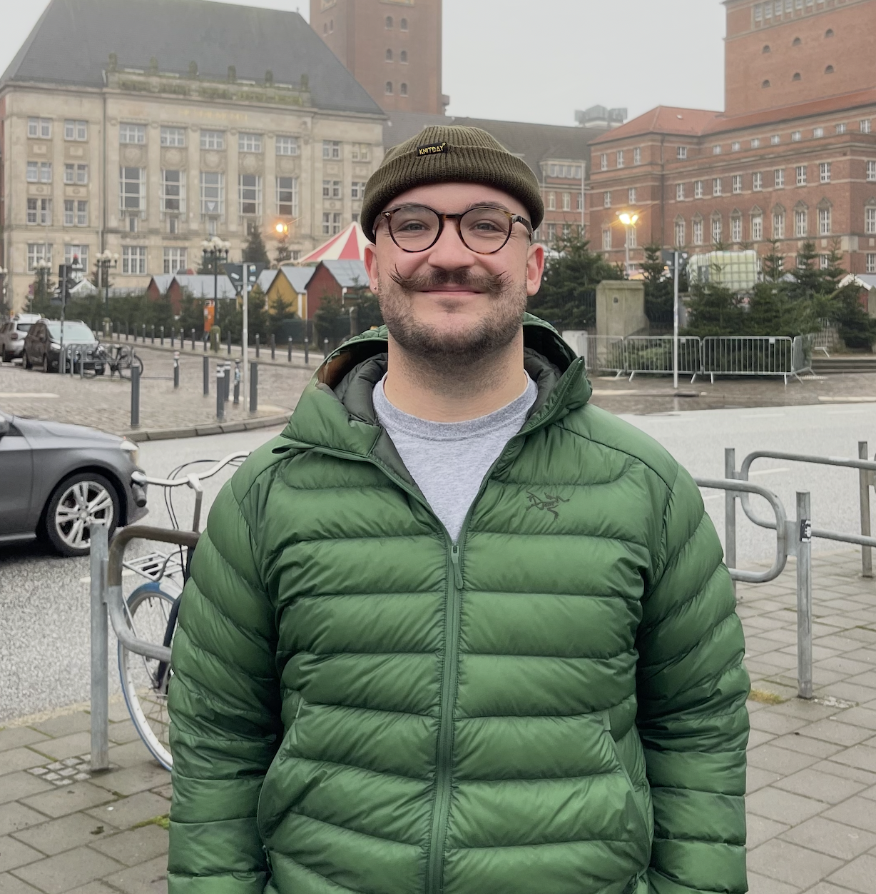
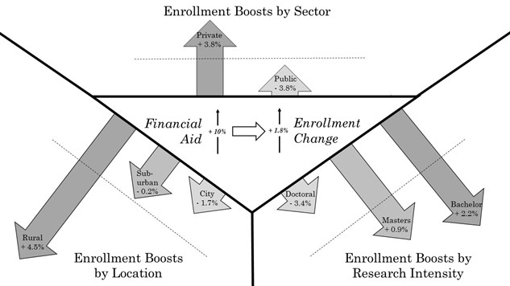

Daniel Posmik
I am a PhD student in the Department of Biostatistics at Brown University, advised by Ani Eloyan. My work centers on large-scale inference problems that involve geometry, shapes, and networks. I am most interested in developing assumption-lean manifold learning techniques for biomedical image data analysis, particularly in neuroimaging. Previously, I worked on causal inference problems, such as causal mediation analysis.
In my free-time, I am an avid bikepacker, urbanist, and lover of dogs. If you are interested in having a chat on any of the above, please do not hesitate to reach out to me at daniel_posmik[at]brown[dot]edu.

Research Interests
My current work extends principal manifold estimation ((Meng & Eloyan, 2021)) to hierarchical imaging datasets (e.g., combining PET and fMRI data) with the goal of improving principled multimodal inference for neurodegenerative diseases.
Selected Publications

Paper Title One
Journal / Conference Year
Paper Title One
Journal / Conference Year
Your custom description.
[PDF]